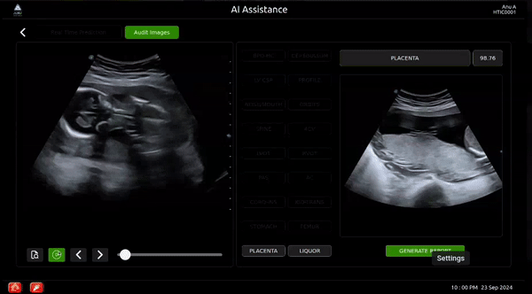
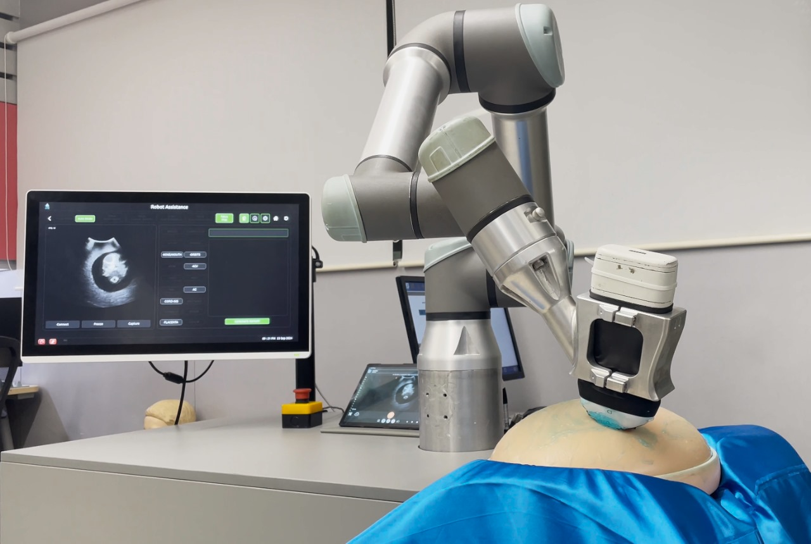
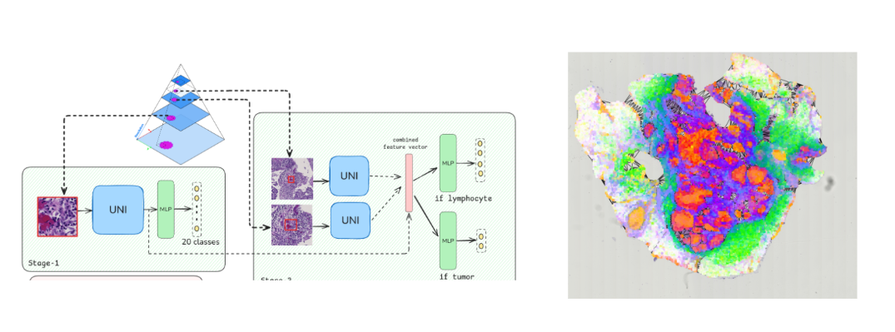
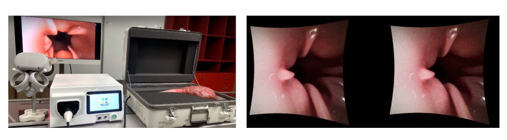
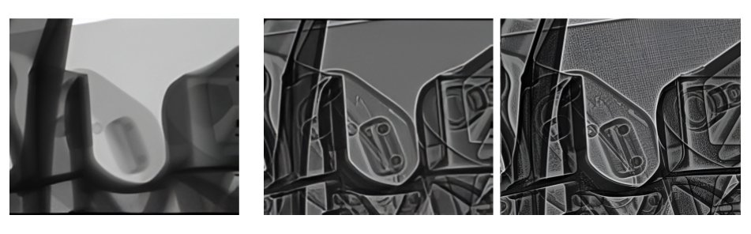

Selected projects across applied AI, robotics, medical imaging, simulation, and visualization.
Real-Time Self-Prompting Adaptation of a Foundation Model for Fetal Ultrasound
Adapted the Segment Anything (SAM) foundation model to be self-prompting for fetal ultrasound, achieving clinical-grade precision with real-time inference. Deployed in a robotic prototype, the system reduced manual scanning time by over 85%, enabling high-throughput prenatal screening and drawing strong interest from clinicians at the XVIII Clinical Ultrasonography in Practice (CUSP) conference.


Deep Learning-Based Analysis of Breast Cancer Whole Slide Images
Developed convolutional and graph neural networks to analyze breast cancer whole slide images, enabling automated patch-level annotation and interpretation. Investigated associations between neighborhood deprivation, the tumor microenvironment, and racial disparities. Findings were presented at two research symposia.

Stereo-Endoscope VR System for Real-Time Medical Visualization
Designed and built a complete VR application for real-time visualization of stereo-endoscope video streams, integrating video capture, image processing, and 3D rendering. The system was showcased at MEDICA 2024, highlighting its innovation in medical imaging and interactive visualization.

Contrast Enhancement of Industrial CT Scans Using Multi-Scale Image Processing
Enhanced contrast in industrial CT scans using multi-scale image processing techniques. This revealed subtle internal structures, improving clarity for inspection and analysis.

Autonomous Underwater Vehicle Simulator
A 3D underwater simulation environment built in Unity to model the dynamics and control of an Autonomous Underwater Vehicle (AUV). It enables realistic testing of navigation and control algorithms in a virtual underwater setting with support for simulated sensors. Designed for rapid prototyping and validation of AUV software stacks.
Github Repo : AUV-Simulator-Unity